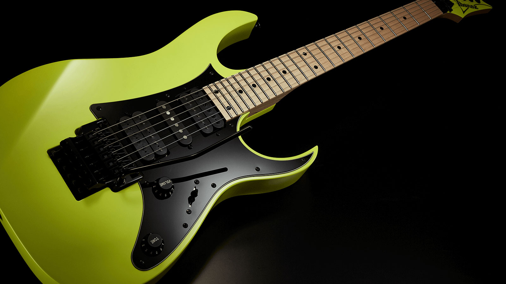

A rock zene
A rockzene több mint egy műfaj: egy életérzés, egy lázadás, egy erőteljes kifejezésmód, amely már több mint hatvan éve formálja a zenei tájat és a társadalom kultúráját. Az elektromos gitárok, a dobok dübörgése, és a lázadás szelleme mind olyan elemek, amelyek a rockzenét örök időkre a zenei univerzum központjába helyezték. De mi is rejlik a színfalak mögött? Hogyan vált a rockzene olyan szimbolikus hatású kultúrális jelenséggé, amely nemcsak a zenét, hanem a társadalom egészét is formálja?
A Rock Története
A rockzene születése a 20. század közepére tehető, amikor az amerikai blues, country, és rhythm and blues (R&B) egyesült az elektromos hangszerekkel. Az 1950-es években Elvis Presley, Chuck Berry és Little Richard nevéhez fűződnek azok az első, korszakalkotó dalok, amelyek megalapozták a rock zenei nyelvét. Azóta a műfaj folyamatosan fejlődött, egyre komplexebbé vált, és különböző alstílusok (hard rock, punk, grunge, metal, stb.) alakultak ki, miközben a rock mindig megőrizte lázadó, szabadságszerető szellemét.
Az Ikonikus Rock Zenekarok
A rockzene gazdag történetét olyan legendás zenekarok írják, mint például
- The Beatles
- Led Zeppelin
- Pink Floyd
- Queen.